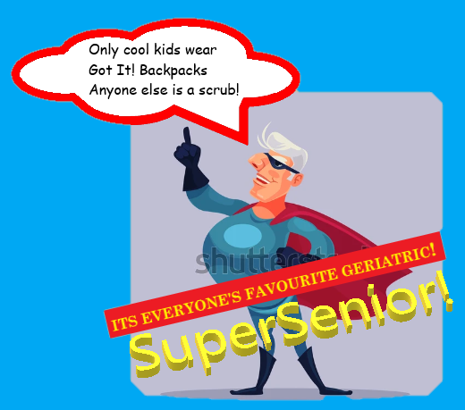

Education and Certification
- Province of Alberta High School Diploma
- Red Cross Standard First Aid and CPR
- Class 5 GDL Drivers License
- National Food Safety Training
I have extensive practice within the field of photography. Overall, it is a pretty good mix of portrait and landscape work. My most recent gig was some photojournalism work. The result of which is pictured below. Elvis just refused to smile for the camera, but otherwise, I am rather proud of how this one turned out. The slight fuzziness of Elvis contrasts nicely with the sharpness of Mark Zuckerberg. Overall, I would say that it is an inspired piece.
I have soem experience working with Java. Primarily in constructing inventory management software. Reading files, recieving and validating inputs, primitive database stuff. I also have extensive practice with JavaFX. Both basic driver run GUI's and FXML file based applications. Most importantly though, I know how to get JavaFX to compile on JDK 17. Libraries, VM arguments and the like. Why use more advanced and functional programs when you can use easy breezy beautiful JavaFX.
One of my most well developed skills is with Microsoft Paint and by extension Paint 3D. Two of the most revered image editors in the world, these programs required years of training to hone my craft. Below is an image that is the result of all of this blood sweat and tears:  My magnum opus, the colours, the 3D text, the slogan. A single piece of artistic brilliance that will never be matched. Take that Mozart, Vivaldi, Da Vinci! May their works fade into the sands of time. A thousand years from now every Tom, Dick and Harry will know not of Mona Lisa or concertos but instead of the legend, SUPERSENIOR!
I know how to repair a Hiawatha 3.5hp outboard motor. I also know how to replace the fuel pump on a 2003 Subaru Forester, so that's handy. I am also fluent in Dog Latin and have done some translation work in the past. I also play goalie in hockey, where I am, statistically speaking better than nothing. Oh yeah, I also know a fair bit about developing and printing film in a darkroom, lots of utility there. Finally, one of my greatest achievements so far in my life was beating Call of Duty: Modern Warfare 2 on veteran difficulty. My parents were extremely proud of me that day.